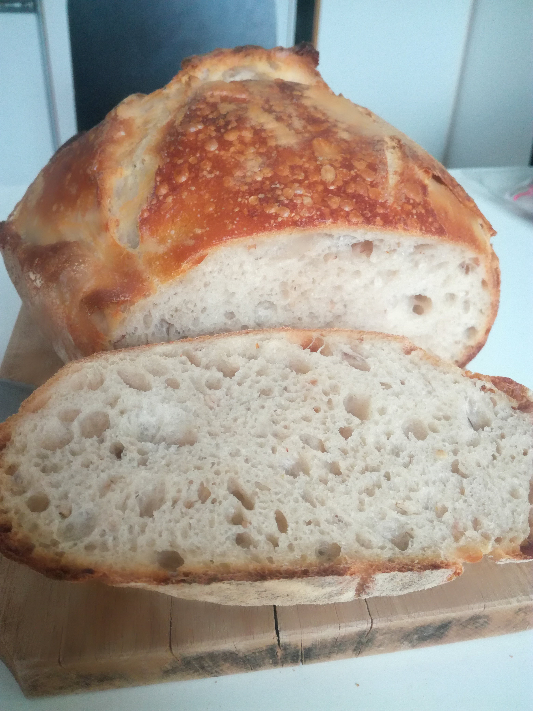

The magic world of sourdough bread
What is sourdough

For more professional advices check the following page:
Szabi a pek
Szabi a pek
Sourdough is a bread made from the natural occurring yeast and bacteria in flour. In traditional sourdough recipes, you’ll find three ingredients: sourdough starter (which consists of flour and water), salt and flour. There is no yeast, no milk, no oils and no sweeteners. It’s about as natural as you get when it comes to bread.